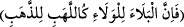

et-Te’vîlâtü’n-Necmiyye’de der ki: “Allah Teâlâ seçkin kullarını edeblendirmek,
terbiye etmek, derecelerini yükseltmek ve yakınlıklarını artırmak için onlara her ne
kadar kahır sûretinde bile olsa lütfun hakîkatine ermeye sebep olacak musîbetler verir.
İşte ifk hâdisesi kahır sûretinde olsa da Hz. Peygamber (a.s.), Hz. Âişe (r.a.), onun
anne-babası ve bütün sahâbe için bir deneme, imtihan, terbiye ve tehzib olmuştur.
Çünkü altını saflaştırmak için ateş neyse ilâhî dostluk için de belâ ve imtihan odur
. Nitekim Rasûl-i Ekrem (s.a.) “İnsanlar içinde en şiddetli
belâlara uğrayanlar peygamberlerdir. Sonra veliler, daha sonra da manevî
mertebelerine göre diğer insanlar gelir.”[124] buyurmuştur. Başka bir hadiste de: “Kişi,
dînine bağlılığı ölçüsünde belâya uğratılır.” buyrulmuştur. Çünkü Allah Teâlâ sevdiği
has kullarının kalpleri için çok kıskançtır. Onlar birbirinde sükûnet bulup
bağlandıklarında onlardan her birini diğerinden uzaklaştıracak ve kendi hazretine
yöneltecek bir hâdise yaratır.
Rasûlullah (s.a.)’e de: “Sana insanlardan en sevimlisi kimdir?” diye sorulunca “Âişe”
diye cevap vermiş[125], onda sükûnet bulmuş ve: “Ey Âişe! Senin sevgin kalbimde bir
düğüm gibidir” buyurmuştur. Bazı rivâyetlere göre Hz. Âişe de Rasûlullah (s.a.)’e: “Yâ
Rasûlallah! Ben seni ve sana yakın olmayı seviyorum” demiştir. İşte Allah Teâlâ ifk
hâdisesini meydana getirdi de Rasûlullah (s.a.) kalbinden Hz. Âişe’nin sevgisinin
düğümünün çözülmesiyle kalbini ondan Allah’a çevirdi. Hz. Âişe (r.a.) da mâsûmiyeti
ortaya çıkınca Rasûlullah (s.a.)’e: “Biz sana değil Allah’a hamd ederiz” diyerek
kalbini ondan Allah’a çevirdi. Böylece Allah bu muhabbetin derinliğini gösterdi,
şüpheyi giderdi ve Hz. Âişe’nin günahsızlığını ortaya çıkardı. Aynı zamanda onları
edeblendirdi, terbiye etti, kendisine yaklaştırdı, derecelerini ve yakınlıklarını artırdı.
Hikem-i Atâiyye ve Şerhi’inde der ki: “Hz. Âişe hakkında uydurulan iftirâdan berî
olduğunu bildiren âyetler inip Rasûlullah (s.a.)’in lisânıyla tilâvet olununca Hz. Ebû
Bekir Sıddîk (r.a.) kemal cihetinden Hz. Âişe’ye nazar ederek: “Ey Âişe! Rasûlullah
(s.a.)’e teşekkür et.” dedi. Hz. Âişe ise tevhîdin aslına bakarak: “Hayır vallahi!
Allah’tan başka kimseye teşekkür etmem” diye karşılık verdi. Çünkü bu halde Hz.
Âişe’nin kalbinden Allah’tan başkasına yer kalmamıştı. Ebû Bekir (r.a.) ise ona sahvda
en kâmil makamı işâret etmiştir. Bu makam, bakâ-billâh makamıdır. Bakâ-billâh makamı
ise hüküm ve hikmetin hakkını vererek Allah’ın yarattığı eserlerin varlığını tanımayı ve
iki dünyayı imar etmeyi gerektirir. Nitekim Allah Teâlâ: “Bana ve anne-babana
şükret.” (Lokman, 31/14) buyurmuş, ana-babaya teşekkürü, kendine şükür ile
bitiştirmiştir. Çünkü senin hakîkî varlığın Allah’ın fazlı ve keremi olduğu gibi mecazî
varlığının aslı da anne-babandır. Hakikatte nimet Allah’a âid olduğu gibi hakîkatte
şükür de O’na âiddir. Mecâzda nimet başkalarına âid olduğu gibi mecazda şükür de
başkalarına âiddir. Rasûlullah (s.a.): “İnsanlara teşekkür etmeyen Allah’a
şükretmez.”[126] buyurmuş ve insanlara teşekkürü Allah Teâlâ’ya şükrün sıhhati için şart
kılmıştır. Yahut Allah Teâlâ’nın şükre vereceği sevabın ancak kullarına teşekkür